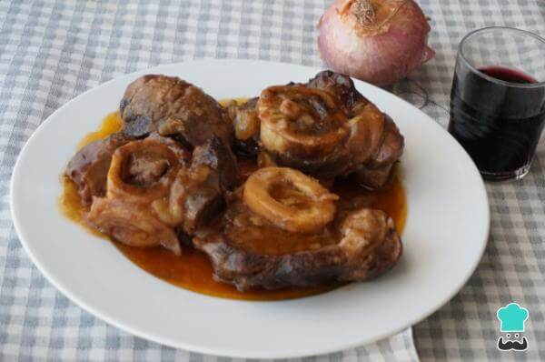

Osobuco al vino tinto
Rollitos de salmon ahumado

Para que pruebes en casa te paso algunas recetas de cocina que te van a encantar.

2hs 30min

1. Pon en un plato la harina, salpimienta los trozos de ossobuco y pásalos por la harina

2. Pon una cazuela con un buen chorro de aceite, cuando esté caliente añade los trozos de ossobuco y dóralos a fuego fuerte para que se sellen

3. Pica la cebolla y el puerro en trozos pequeños

4. En la misma cazuela donde has dorado los trozos de osobuco, añade un poco más de aceite si hace falta. Agrega la cebolla y el puerro picado, deja pochar a fuego medio. Cunado ya empiece a coger color añade el tomate frito, remueve bien.

5. Incorpora el vino negro y déjalo unos 5 minutos para que se evapore el alcohol.

6. Añade los trozos de carne y cubre con agua o caldo. Deja cocinar un mínimo de 2 horas. También puedes preparar este osobuco al vino tinto en olla a presión, en 30-40 minutos estará lista, también puede variar según la olla.

7. Para saber si está listo tienes que ver que está tierna la carne y que se despega la carne del hueso. Apaga y deja reposar. Prueba de sal. Si puedes dejarla de un día para otro, el ossobuco al vino tinto a la cacerola queda mucho más bueno.

8. Cuando vayas a servir, pon la preparación en una fuente con su salsita.

30min

1. Preparamos los ingredientes para elaborar los rollitos de salmón ahumado rellenos.

2. Picamos en trozos muy pequeños todos los ingredientes.

3. En un bol iremos poniendo las verduras para ensaladilla: la lechuga, la cebolleta, las aceitunas y los palitos de cangrejo. Las cantidades serán a nuestro gusto./p>

4. Añadimos 2-3 cucharadas de mayonesa y mezclamos todo muy bien.

5. Ponemos sobre la encimera de la cocina los trozos de salmón ahumado y encima iremos poniendo una cucharada de la pasta que hemos preparado.

6. Enrollamos los trozos de salmón ahumado rellenos de ensaladilla y los iremos poniendo en una fuente sobre una cama de lechuga picada. Reservaremos en la nevera hasta la hora de servir.

7. Servir los rollitos de salmón con ensaladilla rusa recién hechos y decorar con algunas olivas más.